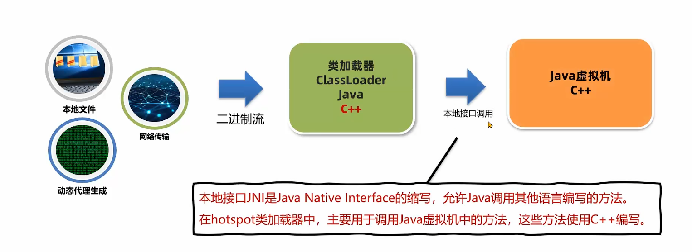
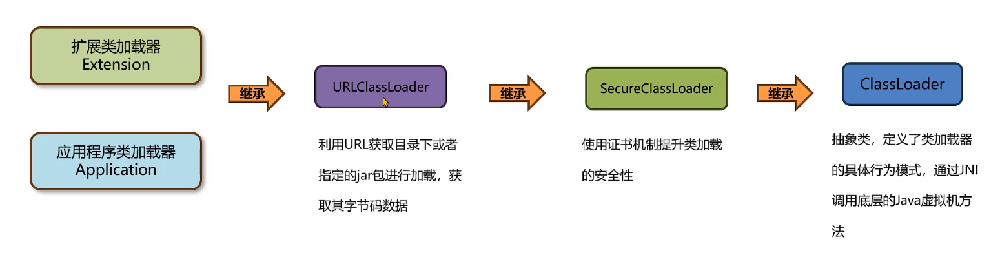

4-类加载器的分类
类加载器的分类
类加载器（ClassLoader）是 JVM 提供给程序去实现类和接口字节码数据的技术
- 类加载器加载进内存
- 调用 JNI 本地接口调用（cpp写好的），创建堆和方法区对象

分类
虚拟机底层实现，位于JVM的源码，实现语言和JVM底层一致，一般 cpp。保证加载基础类，比如
java.lang.StringJDK默认提供或者自定义。继承自
ClassLoader
常见的：
虚拟机实现：BootStrap（加载最核心的类）
Java：Extension（扩展通用的），Application（加载自己写的）
启动类加载器（Bootstrap ClassLoader）
由 Hotspot 虚拟机提供，使用 cpp 编写。默认加载
/jre/lib 的类文件，比如
rt.jar。加载最核心的类。加载后得到基础的环境
1 | //先获取堆上的对象，然后获取类加载器 |
如果想加载多一点类：
放入
jre/lib，但是不推荐。也有可能因为文件名不匹配不会正确加载使用参数扩展
1 | -Xbootclasspath/a:jar包目录/jar包名 |
默认类加载器
extension 和 application 都是JDK提供的，使用 Java编写的类加载器。
位于 sun.misc.Launcher ，静态内部类
具备通过目录或者指定 jar 包将字节码加载到内存

扩展类加载器（extension）
默认加载 Java 安装目录 /jre/lib/ext
加载多点类：
放入
jre/lib/ext使用参数扩展。
1 | //window用;分割两个路径，linux用:分割 |
应用程序类加载器（Application）
加载 classpath 的类文件（自己写的，和第三方）
猜想
Application类加载器和 Extension类加载器本身就是一个类，它们也需要被加载，加载他们的是bootstrap classloader
1 | //打印AppClassLoader的类加载器 |